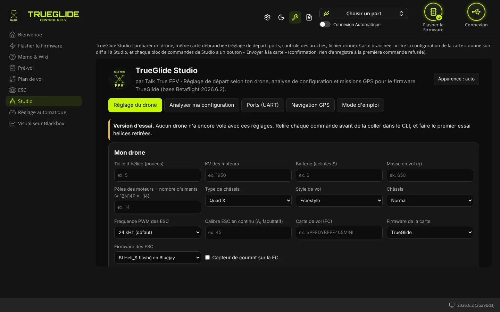
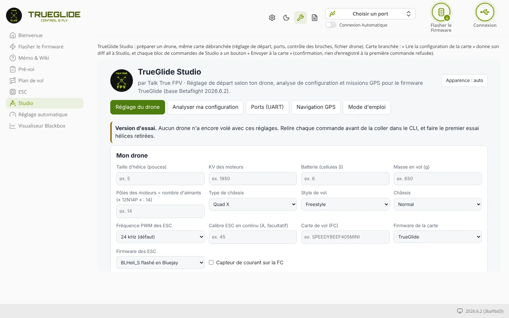

TRUE
TRUETRUEGLIDE STUDIO
L'onglet Studio (groupe « Réglage du vol ») affiche TRUEGLIDE STUDIO, qui prépare un drone même carte débranchée : réglage de départ calculé selon le drone, analyse d'une configuration, ports série, mission GPS et fichier drone. Il sert pour le firmware TRUEGLIDE comme pour Betaflight.


Les cinq parties
- Réglage du drone : on décrit le drone dans le cadre « Mon drone » (taille d'hélice, KV et pôles des moteurs, batterie, masse en vol, type de châssis, style de vol, rigidité du châssis, fréquence PWM et firmware des ESC, carte de vol, firmware de la carte : TrueGlide ou Betaflight). Le bouton Calculer le réglage donne les commandes, chaque valeur avec son explication. La base du réglage est au choix : les estimations de Studio ou les données du calculateur.
- Analyser ma configuration : on colle le
diff allde la carte, Studio l'analyse avec les caractéristiques du drone. - Ports (UART) : récepteur, émetteur vidéo, GPS… Studio génère les commandes des ports pour TRUEGLIDE, TRUENAV, TRUENAV_LIGHT ou Betaflight.
- Navigation GPS : une mission par points (mode AUTOPILOT de TRUENAV) et les réglages de sécurité : vitesse et inclinaison maximales, retour GPS, barrière virtuelle, conduite à tenir si la radio est perdue.
- Mode d'emploi : les étapes, du
diff alld'avant le flash au premier vol.
Le fichier drone
Un seul fichier garde tout : le formulaire, les ports et la configuration de la carte (diff all). On peut aussi ouvrir un diff all seul, ou un fichier du calculateur TALKTRUE FPV XRIG, qui remplit le formulaire. Ensuite, tout se prépare sans la carte.
Avec la carte branchée
Le bouton Lire la configuration de la carte, en haut de l'onglet, lit le diff all de la carte et le donne à Studio. Chaque bloc de commandes de Studio a un bouton Envoyer à la carte. L'envoi est protégé :
- il ne part que vers une vraie carte branchée, jamais vers une carte hors ligne ;
- Studio n'envoie que des réglages (
set,serial,feature,aux…), jamais une commande qui agit tout de suite sur la carte ; - la liste complète des commandes s'affiche et doit être confirmée ;
- une sauvegarde de la carte (
diff all) est enregistrée sur l'ordinateur avant tout envoi ; - les changements à risque demandent une confirmation à part, avec la valeur d'avant ;
- à la première commande refusée, rien n'est enregistré : la carte redémarre sans sauvegarder ;
- sinon, la carte enregistre (
save) et redémarre. Il faut rouvrir Studio et relire la carte pour vérifier.
Avec la carte hors ligne
Studio n'envoie rien. On règle alors avec les onglets du logiciel, sur la copie de la carte, puis on renvoie les changements au prochain branchement.
Après le réglage
- Sans hélices : onglet Moteurs, vérifier l'ordre et le sens des moteurs.
- Avec les hélices : un stationnaire court, puis toucher les moteurs.
- Ajuster avec les curseurs de l'onglet Réglages de PID : le curseur maître d'abord, par pas de 5.